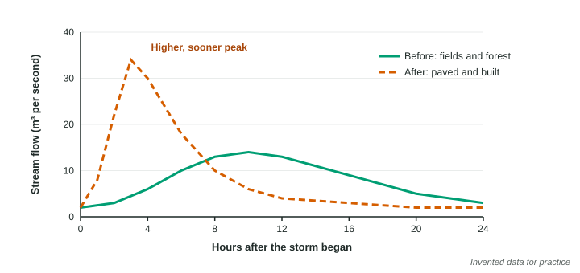

Impacts of Urbanization
Urbanization replaces soil and plants with impervious surfaces.
Part 1 · Hook
Why this matters
Part 2 · Before you start
What this builds on
Part 3 · Prerequisite check
Quick check before you start
1. What is infiltration?
- Water soaking into the ground
- Water flowing over the land surface
- Water evaporating from leaves
- Water vapor turning into droplets
Show the answer
Infiltration is water moving into the soil; runoff flows over the surface.
- Correct: Water soaking into the ground:
- Water flowing over the land surface:
- Water evaporating from leaves:
- Water vapor turning into droplets:
2. A surface with a low albedo
- absorbs most sunlight and warms up
- reflects most sunlight and stays cool
- lets sunlight pass straight through
- gives off no heat at night
Show the answer
Albedo is the share of sunlight reflected; dark, low-albedo surfaces absorb more and warm.
- Correct: absorbs most sunlight and warms up:
- reflects most sunlight and stays cool:
- lets sunlight pass straight through:
- gives off no heat at night:
3. What is a watershed?
- The land area that drains into one stream, river or lake
- A layer of rock that holds groundwater
- A dam that stores water for a city
- The line where fresh and salt water meet
Show the answer
A watershed is the land that drains to one body of water; an aquifer is underground.
- Correct: The land area that drains into one stream, river or lake:
- A layer of rock that holds groundwater:
- A dam that stores water for a city:
- The line where fresh and salt water meet:
Part 4 · See it
See it first

Part 5 · Step by step
How it works, step by step
- Land is covered with roofs, roads and parking lotsrain cannot soak in (less infiltration)
- More water runs off, and storm drains carry it straight to streamsstreams rise higher and faster, so floods are more frequent
- Less water soaks ingroundwater is recharged less, and streams run lower between storms
- Runoff flows over pavementit carries oil, metals, salt, litter and heat into streams
Part 6 · Key ideas
Key ideas
- Urbanization covers land with impervious surfaces. Less rain soaks in and more runs off, so floods rise higher and faster and groundwater is recharged less.
- A coastal city that pumps groundwater faster than it is recharged can pull seawater into its aquifer: saltwater intrusion.
- Cities are warmer than the countryside, an urban heat island: dark surfaces with low albedo absorb sunlight, and fewer plants cool the air.
- Urban sprawl spreads low-density development onto farms and natural land, which adds roads, driving and paved area per person.
Part 7 · Misconception
A common mistake
The wrong idea: Cities flood because it rains more over cities.
What actually happens: The rain is about the same; the land is different. Impervious surfaces stop rain from soaking in, and pipes deliver the runoff to streams all at once, so the same storm causes a higher, faster flood.
Part 8 · Check yourself
Check yourself
Exam-style questions. Anything you miss goes into your review queue.
1. Which of these is an impervious surface?
- A parking lot
- A lawn
- A forest floor
- A farm field
Show the answer
Pavement does not let water soak through. Lawns, forests and fields let water infiltrate.
- Correct: A parking lot: Right: water cannot soak through pavement.
- A lawn: Lawns let water soak in, though less than a forest.
- A forest floor: Forest soil soaks up water well.
- A farm field: Field soil lets water soak in.
2. Why does a stream in a city flood more often than a similar stream in a forest?
- Rain on roofs and pavement runs off instead of soaking in
- Cities get more rain than forests because tall buildings pull in clouds
- City streams are wider, so they hold more of the rain that falls
- Trees in the forest release extra water into the stream during storms
Show the answer
Impervious surfaces and storm drains send rain to the stream at once, so water levels rise fast and high.
- Correct: Rain on roofs and pavement runs off instead of soaking in: Right: runoff instead of infiltration.
- Cities get more rain than forests because tall buildings pull in clouds: Rainfall is about the same; the land surface is what differs.
- City streams are wider, so they hold more of the rain that falls: Width is not the reason; city streams often are straightened and fill fast.
- Trees in the forest release extra water into the stream during storms: Trees soak up and slow water; they do not add floodwater.
Model or diagram
Stream flow after a storm, before and after development
3. How did the peak stream flow change after development?
- It rose from 14 to 34 m³ per second and came 7 hours sooner
- It fell from 34 to 14 m³ per second and came 7 hours later
- It rose from 14 to 34 m³ per second but came at the same time
- It stayed at 14 m³ per second but lasted much longer than before
Show the answer
Before: peak 14 at 10 hours. After: peak 34 at 3 hours, 7 hours sooner.
- Correct: It rose from 14 to 34 m³ per second and came 7 hours sooner: Right: higher and sooner.
- It fell from 34 to 14 m³ per second and came 7 hours later: The change is the reverse: up, not down; sooner, not later.
- It rose from 14 to 34 m³ per second but came at the same time: The peak time moved from 10 to 3 hours.
- It stayed at 14 m³ per second but lasted much longer than before: The peak rose to 34.
4. Write the setup for the percent change in peak stream flow after development, then give the answer.
Type the setup as on the exam, with brackets and units, then the answer.
Show the answer
- Setup: ; answer 142.9 %
5. Why does the "after" curve drop so quickly after its peak?
- Little water soaked into the ground, so little seeps into the stream later
- The storm stopped sooner after the land was developed
- The stream channel was dammed upstream after development
- Evaporation from pavement removed the water from the stream
Show the answer
Before development, water that soaked in fed the stream slowly for hours. With pavement, almost everything arrives at once and nothing is stored.
- Correct: Little water soaked into the ground, so little seeps into the stream later: Right: no stored groundwater to keep the flow up.
- The storm stopped sooner after the land was developed: The graph shows the same storm.
- The stream channel was dammed upstream after development: A dam is not shown and would lower the peak.
- Evaporation from pavement removed the water from the stream: Evaporation from pavement does not empty a stream in hours.
6. A town downstream of this watershed is planning flood control. What does the graph suggest?
- Floods will come faster and higher than old records predict, so warning time is shorter
- Floods will come slower and lower than before, so the old flood walls can be removed
- Floods will be the same size as before, but they will last for many more hours
- Floods will happen mostly in summer, because pavement heats the water
Show the answer
The developed peak is 2.4 times higher and arrives 7 hours sooner, so plans based on the old curve underestimate floods.
- Correct: Floods will come faster and higher than old records predict, so warning time is shorter: Right: higher, faster floods mean less warning.
- Floods will come slower and lower than before, so the old flood walls can be removed: The after curve is faster and higher.
- Floods will be the same size as before, but they will last for many more hours: The after curve is shorter, not longer.
- Floods will happen mostly in summer, because pavement heats the water: The graph is about one storm, not seasons.
Data
Where rain goes as a watershed is paved
| Impervious cover | Runs off (%) | Soaks in (%) | Evaporates or transpires (%) |
|---|---|---|---|
| Natural land (0%) | 10 | 50 | 40 |
| 10-20% | 20 | 45 | 35 |
| 35-50% | 30 | 35 | 35 |
| 75-100% | 55 | 15 | 30 |
7. Which relationship does the table show?
- As impervious cover rises, runoff rises and the share that soaks in falls
- As impervious cover rises, runoff falls and the share that soaks in rises
- As impervious cover rises, each share stays about the same
- As impervious cover rises, evaporation rises faster than runoff
Show the answer
Runoff: 10, 20, 30, 55%. Soaks in: 50, 45, 35, 15%.
- Correct: As impervious cover rises, runoff rises and the share that soaks in falls: Right: more pavement, more runoff, less soaking in.
- As impervious cover rises, runoff falls and the share that soaks in rises: The directions are reversed.
- As impervious cover rises, each share stays about the same: Runoff more than quintuples.
- As impervious cover rises, evaporation rises faster than runoff: Evaporation falls slightly, from 40 to 30%.
Part 9 · Summary
Summary
Part 10 · Up next
What comes next
Part 11 · Connections